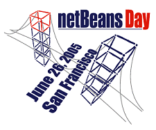

NetBeansTM Software Day at 2005 JavaOneSM Conference

The second annual NetBeans Software Day in San Francisco was a resounding
success — so much so, that walls had to be moved to accomodate the standing-
room-only crowd.
The event was a great opportunity for community members to
meet each other face-to-face. Attendees also met the developers of NetBeans, saw
demos of upcoming NetBeans IDE features, and attended talks where they learned
how to write plug-ins for NetBeans and how to get the most out of advanced
features such as the NetBeans Profiler. The day ended with a special
presentation of the NetBeans Community Awards.
NetBeans Software Day 2005 took place on June 26 at the Argent Hotel in San
Francisco. It was held a companion event to the JavaOne Developers' Conference
which began the following day. NetBeans Software Day was free for anyone who
wanted to attend and ran from noon into the evening.
The NetBeans project team takes this opportunity to congratulate our Special
Guests, Presenters, Community Award winners, attendees, and other supporters who
made this incredible event possible!
Couldn't make it to NetBeans Day? Want to come to the next one?
Good news! NetBeans Software Day presentations are now
available online.
We are also taking NetBeans Software Day on an around the world tour! Our first
stop will be in China on Sept 12, 2005, the day before JavaChina. More details
will be posted soon on
JavaChina.cn.
On behalf of the NetBeans project team we would like to thank everyone
who attended and supports NetBeans for making this incredible event
possible!
Presentations
The attendees of the NetBeans Software Day 2005 were treated to a series of
insightful presentations. If you missed them or you want to relive your
favorites, our presentations are now available for you to download.
Speaker Bios

James Gosling
James Gosling received a BSc in Computer Science from the University of Calgary
Canada in 1977. He received a PhD in Computer Science
from Carnegie-Mellon University in
1983. The title of his thesis was "The Algebraic Manipulation of Constraints".
He is currently a VP & Fellow at Sun Microsystems. He has
built satellite data acquisition systems, a multiprocessor version of Unix,
several compilers, mail systems and window managers. He has also built a WYSIWYG
text editor, a constraint based drawing editor and a text editor called `Emacs'
for Unix systems. At Sun his early activity was as lead engineer of the NeWS
window system. He did the original design of the Java programming language
and implemented its original compiler and virtual machine.
He has recently been a contributor to the Real-Time Specification for Java,
and most recently was a researcher at Sun labs
where his primary interest was software development
tools. He is now the Chief Technology Officer of Sun's Developer Products group.

Jonathan Schwartz
Jonathan Schwartz is the President and Chief Operating Officer of Sun
Microsystems. In this role he is responsible for operations and execution of
Sun's day-to-day business including Systems, Software, Global Sales Operations,
worldwide manufacturing and purchasing, customer advocacy and worldwide
marketing. Before holding this position, Schwartz served as executive vice
president of Sun's software group where he was responsible for the company's
software technologies and business. During his tenure at Sun, Schwartz has also
directed the company's long-range planning and corporate development activities
including mergers and acquisitions and Sun's venture capital portfolio. He also
oversaw strategic initiatives for the industry, including the Liberty Alliance,
an industry alliance to promote standards around network identity. He also
headed Sun's investment group and ran Sun's development tools and Java product
marketing organizations. Before joining Sun in 1996, Scwhartz was chief
executive officer of Lighthouse Design, Ltd., which Sun acquired. He began his
career as a consultant with McKinsey & Co., Inc., serving financial services
companies. Schwartz is on the board of directors of Dorado Corporation. He holds
degrees in economics and mathematics from Wesleyan University.

Rick Ross
Rick Ross founded Javalobby.org in 1997 and has been an advocate for developer
interests ever since. His current interests include rich internet applications,
service-oriented architectures, human factors and usability engineering, and
integration of heterogeneous software systems. Rick himself is an active Java
developer, writes a popular weekly newsletter column, and speaks frequently at
Java-related gatherings. Javalobby has grown from the original website operated
out of Rick's New York City apartment into a network of Java developer sites
that serves almost 200,000 members worldwide. The Javalobby Network now includes
Javalobby.org, JRoller.com, MyJavaServer.com, JDocs.com, JUGCentral.com,
JavaCrawl.com, JavaBlackBelt.org and other sites in development. Rick lives in
Cary, North Carolina with his wife and daughters.

Hideya Kawahara
Hideya Kawahara is a Senior Staff Engineer at Sun Microsystems and
the creator of Project Looking Glass.
His interests are in the areas of software environment for next
generation desktop and consumer devices. Project Looking Glass is an
opensource exploration project to bringing a richer user experience to
the desktop and applications via 3D windowing and visualization
capabilities. He is enjoying to explore the new opportunities with
the bright community members.

Tim Cramer
Tim Cramer has been at Sun for 12 years. Currently, he is the Engineering
Director for NetBeans. Prior to that, he managed the Java performance group,
worked on the dynamic compilers, and also did static compilers. Prior to
Sun he worked on supercomputers for Supercomputer Systems, Inc and Lawrence
Livermore National Lab. Tim is very excited to help shepherd the resurgence of NetBeans.
He will MC NetBeans Day.

Graham Hamilton
Graham Hamilton is a VP and Fellow within the Java platform team at Sun
Microsystems. His main interests are around the use of the Java platform for
large scale enterprise and web development. He is also strongly focused on
attracting new developers to the Java platform.
Hamilton joined the Java technology team in 1995 and has contributed to a wide
variety of Java technology initiatives, including technologies such as CORBA
support, the JDBC APIs, JavaBeans component architecture, the Java Plug-in
software, RMI-IIOP, Java API for XML-based RPC (JAX-RPC), and others. He has
been the lead architect for the Java 2 Platform, Standard Edition (J2SE)
releases 1.3, 1.4, and 1.5. Hamilton has helped encourage community
participation in Java API development and he was one of the designers of the
Java Community Process program.
Hamilton's current activities include acting as a Sun representative on the JCP
Executive Committee, helping develop plans for the post-Tiger releases of J2SE,
leading an Ease-of-Development initiative within the Java platform team, and
working with Sun's tools group on new tools initiatives.

Robert Brewin
Robert Brewin is a Distinguished Engineer and Architect for Sun's Developer
Tools and a leading advocate for various tools initiatives with an emphasis in
improving the ease of development capabilities in both the tools and platforms.
Within these roles he was also the architect for Java™ Studio Creator as well
as the Java Studio Enterprise and Sun Studio product lines. He has been involved
in a number of Sun initiatives, including the SunOne architecture and various
technical and architectural teams within the Sun software organization.

Tim Lindholm
Tim Lindholm is a Distinguished Engineer for the Java™ Software group at Sun
Microsystems, and the Architect of the Java™ 2 Micro Edition platform.
Tim was an original member of the Java project at Sun and was a key contributor
to the Java programming language and runtime. He remains the architect of the
Java virtual machine, and is co-author of the Java Virtual Machine
Specification. He is also one of the designers of the Java Community Process
(JCP) and is currently Sun's primary representitive on the JCP Micro Edition Executive
Committee. Tim graduated from Carleton College, Northfield, Minnesota with a
B.A. in mathematics. Prior to joining Sun he worked in runtime environment
design and programming languages at Argonne National Laboratory, the University
of Edinburgh, Quintus Corporation, and Xerox PARC.

Tim Bray
Tim Bray managed the Oxford English Dictionary project at the University of
Waterloo in 1987-1989, co-founded Open Text Corporation (Nasdaq:OTEX) in 1989,
launched one of the first public web search engines in 1995, co-invented XML 1.0
and co-edited "Namespaces in XML" between 1996 and 1999, founded Antarctica
Systems (antarctica.net) in 1999, and served as a Tim Berners-Lee appointee on
the W3C Technical Architecture Group in
2002-2004. Currently, he serves as Director of Web Technologies at Sun
Microsystems, publishes a popular weblog,
and co-chairs the IETF AtomPub Working Group.

Bill Shannon
Bill Shannon is a Distinguished Engineer at Sun Microsystems, where he
is one of the architects of the Java 2 Platform, Enterprise Edition.
He has been with Sun since 1982 and previously worked on the JavaMail
API, the HotJava Views product, the Common Desktop Environment, the
Solaris operating system, and all versions of SunOS. He graduated from
Case Western Reserve University with an MS in Computer Engineering.